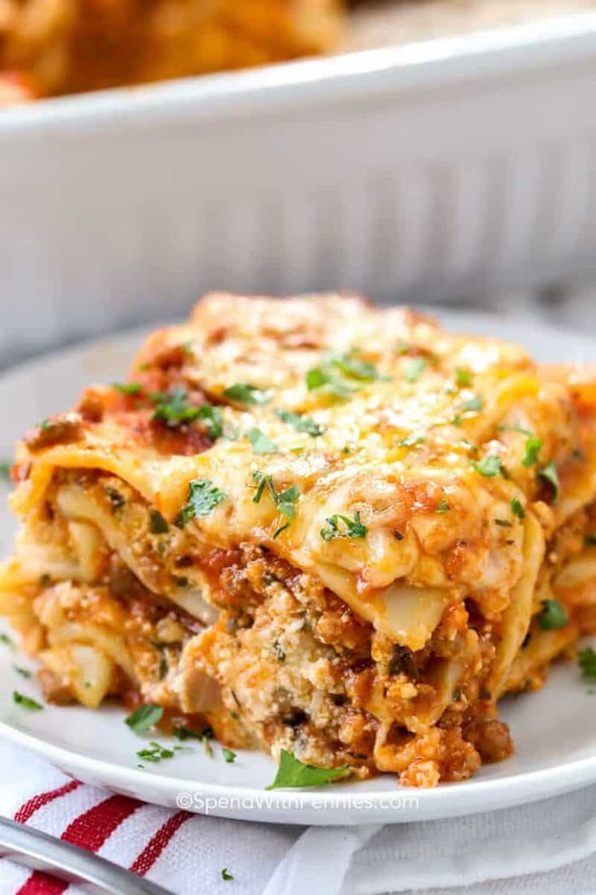

Lasagna
Home

Description
For this recipe, we are essentially making a thick, meaty tomato sauce and layering that with noodles and cheese into a casserole. Here's the run-down:
For the meat sauce:
- 2 teaspons extra virgin oil
- 1 pound ground beef chuck
- 1/2 medium onion, diced
- 1/2 large bell pepper (green, red or yellow), diced
- 2 cloves garlic, minced
- 1 can good quality tomato sauce
- 3 ounces tomato paste
- 1 can crushed tomatoes
- 2 tablespoons chopped fresh oregano or 2 teaspons of dried oregano
- 1/4 cup chopped fresh parsley
- 1 tablespoon Italian seasoning
- 1 pinch garlic powder
- 1 tablespoon red or white wine vinegar
- 1 tablespoon to 1/4 cup sugar
To assemble the lasagna
- 1/2 pound dry lasagna noodles
- 15 ounces ricotta cheese
- 1 1/2 pounds mozzarella cheese
- 1/4 pound freshly grated Parmesan cheese
How to make
- Put a large pot of salted water (1 tablespoon of salt for every 2 quarts of water) on the stovetop on high heat. It can take a while for a large pot of water to come to a boil (this will be your pasta water), so prepare the sauce in the next steps while the water is heating.
- In a large skillet, heat 2 teaspoons of olive oil on medium-high heat. Add the ground beef and cook until it is lightly browned on all sides. Remove the beef with a slotted spoon to a bowl. Drain off all but a tablespoon of fat.
- Add the diced bell pepper and onions to the skillet (in the photo, we are using yellow bell pepper and red onions). Cook for 4 to 5 minutes, until the onions are translucent and the peppers softened. Add the minced garlic and cook half a minute more. Return the browned ground beef to the pan. Stir to combine, reduce the heat to low, and cook for another 5 minutes.
- Transfer the beef mixture to a medium-sized (3- to 4-quart) pot. Add the crushed tomatoes, tomato sauce, and tomato paste to the pot.
- Add the parsley, oregano, and Italian seasonings, adjusting the amounts to taste. Sprinkle with garlic powder and/or garlic salt, to taste.
- Sprinkle with red or white wine vinegar. Stir in sugar, a tablespoon at a time, tasting after each addition. (The amount of sugar needed will vary, depending on how acidic your tomatoes are.)
- Add salt to taste. Remember that you will later be adding parmesan, which is salty.
- Bring the sauce to a simmer and then lower the heat to maintain a low simmer. Cook for 15 to 45 minutes, stirring often. Scrape the bottom of the pot occasionally, making sure nothing sticks to the bottom and scorches. Remove from heat.